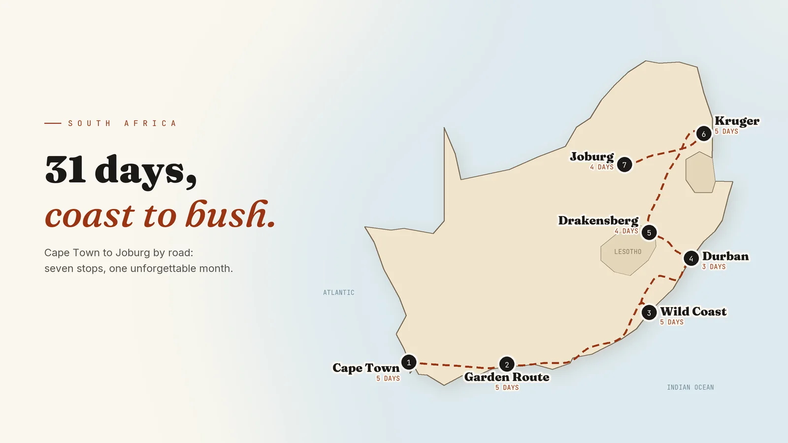

Featured
Coast to Bush: The 31-Day South Africa Road Trip I'd Plan for a Friend
Cape Town, the Garden Route, the Wild Coast, Durban, the Drakensberg, Kruger and Joburg: one month, seven stops, and the honest local advice to go with it.
Read more →